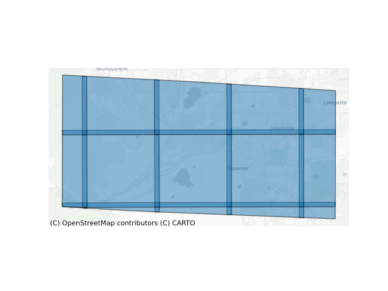

Note
Click here to download the full example code
Searching
Search a STAC API with rustac.search:
import contextily
import pandas
import rustac
from geopandas import GeoDataFrame
items = await rustac.search(
"https://stac.eoapi.dev",
collections="MAXAR_Marshall_Fire_21_Update"
)
data_frame = GeoDataFrame.from_features(items)
data_frame["datetime"] = pandas.to_datetime(data_frame["datetime"])
axis = data_frame.set_crs(epsg=4326).to_crs(epsg=3857).plot(alpha=0.5, edgecolor="k")
contextily.add_basemap(axis, source=contextily.providers.CartoDB.Positron)
axis.set_axis_off()

Search stac-geoparquet with DuckDB, no servers required!
items = await rustac.search(
"../../data/100-sentinel-2-items.parquet",
datetime="2024-12-01T00:00:00Z/..",
)
data_frame = GeoDataFrame.from_features(items)
data_frame["datetime"] = pandas.to_datetime(data_frame["datetime"])
data_frame[["datetime", "geometry"]]
If you know you're going to a geopandas.GeoDataFrame (or something else that speaks
arrow), you can use the arrow optional dependency for rustac (pip
install 'rustac[arrow]') and search directly to arrow, which can be more
efficient than going through JSON dictionaries:
from rustac import DuckdbClient
client = DuckdbClient()
table = client.search_to_arrow(
"../../data/100-sentinel-2-items.parquet",
datetime="2024-12-01T00:00:00Z/..",
)
data_frame = GeoDataFrame.from_arrow(table)
data_frame[["datetime", "geometry"]]
Total running time of the script: ( 0 minutes 6.403 seconds)
Download Python source code: example_search.py